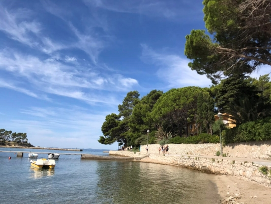

Hello! You may know me as Henry, but I go by Dalton which is my middle name. It is very nice to meet you all and hopefully this website leaves a pleasant impression. As we followed along with the textbook I quickly grew dissatisfied with the overall appearance of the website, and I wanted to experiment with the tools provided through dreamweaver while also looking for other resources to learn from. This landing page / index page was the result of me following along with a video I found on YouTube. The following pages are a result of taking what I learned from the textbook along with the video and applying them to present the content to you all. I will agree that this home page is "busy", All of the pictures are my own except the one photo of the individual holding a phone. The photos cover a range of events from going to a NFL game in Baltimore, my personal computer setup at home, a sunset on Jekyll Island where I used to work, and lastly my trip to Europe.
Initially I had an about me page, but I figured it would be better to include some of that information here, and create a dedicated contact page for the future. As I am still studying in school I do not have a lot of information to market myself to potential employers, but it is what I will be working on moving forward.
In the dropdown menu below, I have included more information about the photos I posted above and more information about myself.